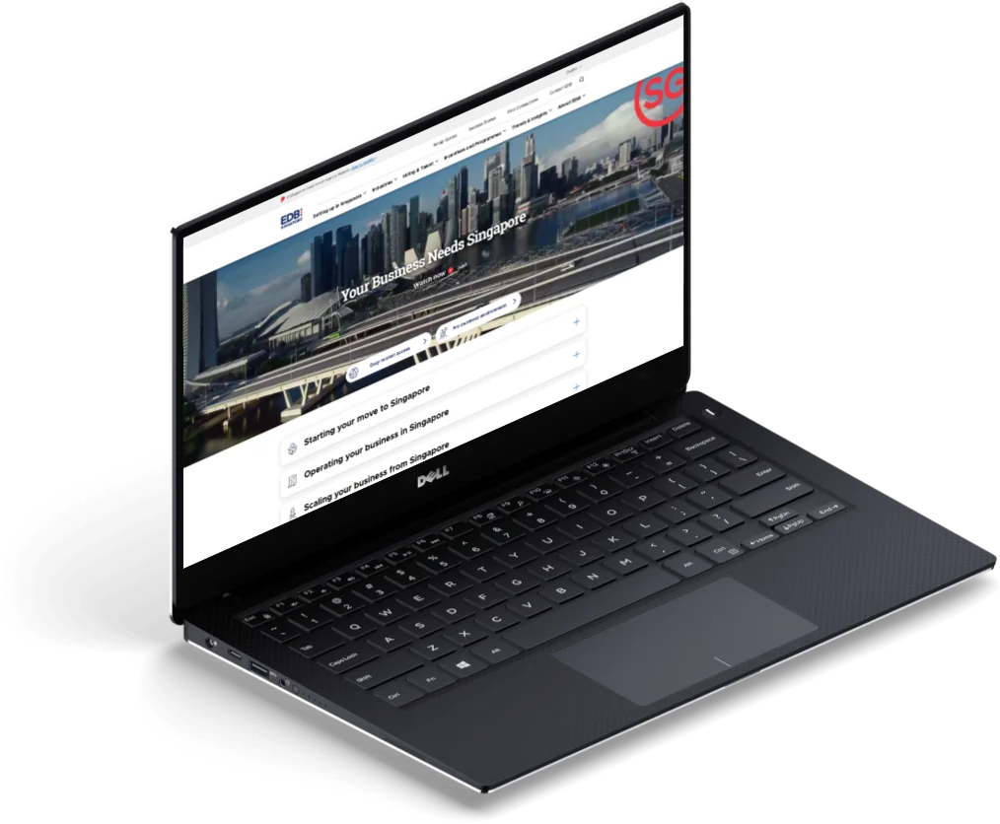
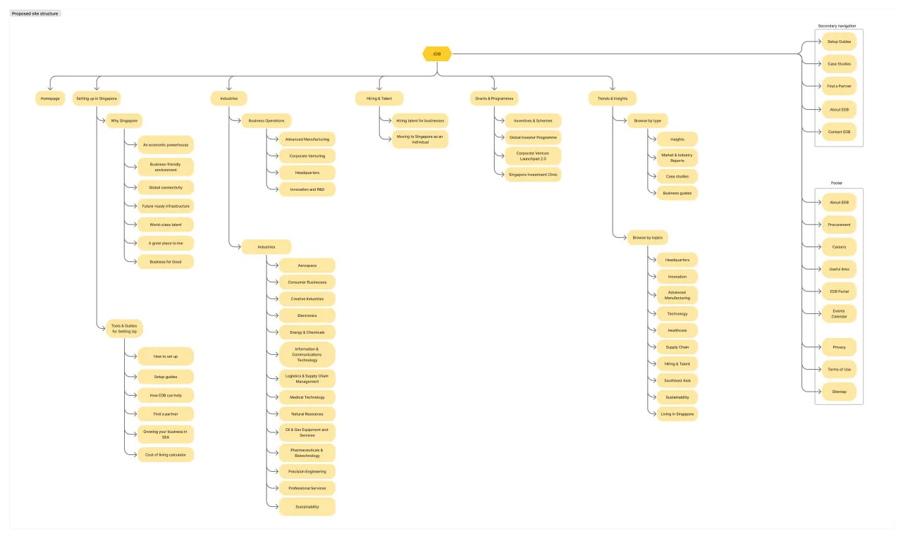
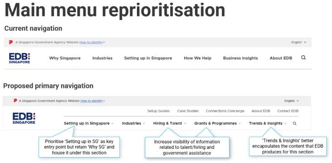
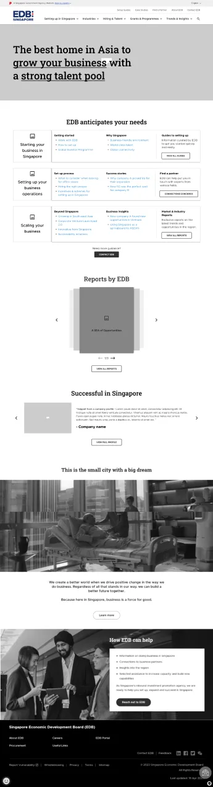
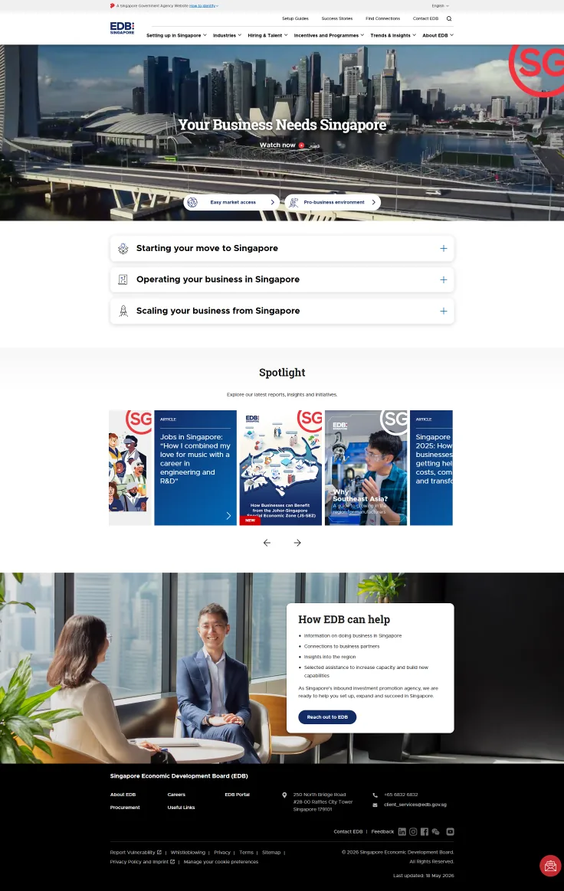

Singapore Economic Development Board
Low-effort, high-return optimization of a B2B government website
Part of a long-term engagement between Convertium and EDB, Singapore’s inbound investment promotion agency. Several smaller projects shipped in parallel.
- Role
- UX strategist and designer
- Project
- 8 months across 2023 and 2025
- Client relationship
- 7 years, 2018–2025
- Client team
- EDB: Marketing, IT
- Convertium team
- Project management, data and marketing, UI

Results
- Bounce rate fell 14% by 2024, and a further 18% by 2025.
- Engaged visits rose 19.7% in 2025.
- Honorable mentions for Best Usability (Government) and Most User-Centric Website at the Singapore Government’s 2025 Digital Service Awards.
The challenge
Business owners outside Singapore weren’t finding the site. When they did, they struggled to find the information relevant to them quickly. The result was low traffic, few return visits, and little engagement or qualified enquiries.
Approach
I adapted the Lean Canvas to prioritize project decisions, and used it to pick out the changes that needed the least effort for the most return.
- Task-based navigation, replacing a category-driven structure
- A scroll-aware navigation bar that hides on scroll down and reappears on scroll up, replacing static top-of-page behavior
- A self-selection module on the home page to funnel visitors faster
- Content optimized for search ranking and findability
Success was measured on bounce rate, click-through rate and engagement, time spent on site, and number of pages visited.
Process
The new information architecture was built from site data and presented to EDB’s C-suite.




Solutions were brainstormed and wireframed, then handed to Creative for high-fidelity design.



